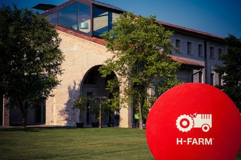

Il 4 aprile ci siamo recati a Roncade (in provincia di Treviso) per partecipare all’ undicesima attività riguardante alternanza scuola-lavoro all'azienda di l’H-FARM.
È una piattaforma digitale nata nel 2005 con l’obiettivo di aiutare giovani imprenditori nel lancio di iniziative innovative e supportare la trasformazione delle aziende italiane in un’ottica digitale.

H-Farm sta avendo uno sviluppo molto rapido infatti ci hanno detto che amplieranno la loro sede e che si pensa ad un numero di dipendenti superiore ai 2000.
H-farm ha creato una scuola, la BIG ROCK, che cerca di creare dei sognatori, facendo fare, oltre a ore di studio, attività che in una scuola normale non si potrebbero mai trovare, come, per esempio, andare in un luogo senza cartina nel quale i ragazzi mediante il loro ingegno devono cercare “una via di fuga”, oppure una giornata ad un campo di airsoft(gioco simile al paintball ma senza colori).